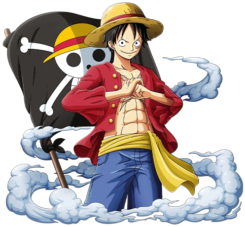

SOBRE O ANIME
One Piece e um manga escrito por Eichiro Oda, que teve seu começo em 1997, e começou a ser animado em 1999 hoje já se conta com mais de 1100 episódios! E um anime com uma pegada mais cômica e divertida, porem que trás diversas reflexões de grande valor do mundo em que vivemos atualmente. O anime conta a historia do jovem Monkey D. Luffy e suas aventuras com a sua tripulação chamada de “Chapéus de Palha”. após comer uma fruta do diabo que lhe concedeu propriedades de borracha, ele se lança no mundo dos piratas em busca do seu principal objetivo que e conquistar o One Piece e se tornar o rei dos piratas.